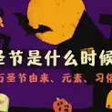

跳到主要内容
无障碍功能帮助
快捷设置
搜索结果
不限语言
中文网页
简体中文网页
时间不限
过去 1 小时内
过去 24 小时内
过去 1 周内
过去 1 个月内
过去 1 年内
自定日期范围...
自定日期范围
从
至
所有结果
精确匹配
高级搜索
找到约 2,050,000,000 条结果
（0.17 秒）
AI 模式对话
您说：万圣节万圣节
AI 概览
AI 模式针对“万圣节”的回复
万圣节
（通常指10月31日的
）起源于古代凯尔特人的萨曼节（Samhain），并与西方基督教的
相互融合。
节日时间与核心概念
已分享
0 个文件
- 客观日本日本社会 - 【面面观】日本是怎么把万圣节变成世界最大的成人狂欢节的？ - 客观日本* Date: 10/31 (Halloween eve), Nov 1. * Evolution: Western c...
- 维基百科万圣夜- 维基百科，自由的百科全书万圣夜（英语：Halloween，源自All Hallows' Eve “诸圣节前夕”），在每年的10月31日晚庆祝。 ...
- Hostelworld万圣节：日期、含义、起源和传说（2026） - Hostelworld2026年10月14日 — 万圣节是哪天？每年10月31日。了解万圣节的含义、起源（萨温节）、传说，以及人们为什么要盛装打扮和雕刻南瓜。
- 百度百科万圣节（西方传统节日）_百度百科Origin: Celtic Samhain harvest festival (Oct 31) merging wit...
-
www.abcdreamusa.com万圣节是什么时候？万圣节的由来、元素、习俗大全 - ABC Dream USA* Date: Oct 31 (Halloween/All Hallows' Eve) to Nov 2 (All So...

- 人民网不给糖就捣蛋：万圣节的由来及各国传统(组图) - 时政- 人民网2015年11月4日 — 那时的人们相信， 故人的灵魂会在这一天回到故居地，在活人身上找寻生灵，借此再生。 而活着的人则惧怕鬼魂，于是人们就在这一...
- 永恆選物為什麼萬聖節要給糖果？ 萬聖節的由來 - 永恆選物2023年11月27日 — 傳統上，萬聖節是一個與幽靈、鬼怪和嚇人元素相關的節日，人們都會穿著恐怖的服裝，在晚上參加變裝派對或遊行。 給糖果的傳統是...
- GTN（グローバルトラストネットワークス）日本万圣节全攻略| 变装、乐园盛典与人气打卡地 - GTN2026年10月27日 — 日本的万圣节已经发展成为一种将西方传统节日与本土文化元素相结合、充满活力且色彩斑斓的独特庆典。从角色扮演（Cosplay...
全部显示
展开
我的广告中心
万圣夜
/
日期
2026年10月31日星期六
用户还搜索了
选择您要针对哪个元素提供反馈
您也可以
反馈
今日涂鸦
2026 年万圣节
万圣节快乐！今日涂鸦带您领略趣味盎然的节日传统，共度欢乐时光。
网页搜索结果
万圣夜- 维基百科，自由的百科全书
维基百科https://zh.wikipedia.org › zh-hans › 萬聖夜
维基百科
https://zh.wikipedia.org › zh-hans › 萬聖夜
万圣夜（英语：Halloween，源自All Hallows' Eve “诸圣节前夕”），在每年的10月31日晚庆祝。 万圣节. 万圣夜的标志之一—杰克南瓜灯. 别名, 万鬼节.
万圣节（西方传统节日）
百度百科https://baike.baidu.com › item › 万圣节
百度百科
https://baike.baidu.com › item › 万圣节
万圣节（英文：All Saints' Day）在每年的11月1日，是西方传统节日，也被称为鬼节。在中文含义中，通常将万圣节前夜（Halloween）称为万圣节，将万圣节当日（All ...
图片
显示更多图片
相关问题
万圣节是为了纪念什么？
2026年万圣节是几号？
万圣节和万圣夜有什么区别?
11月1日是什么节日?
【面面观】日本是怎么把万圣节变成世界最大的成人狂欢节的？
客观日本https://www.keguanjp.com › kgjp_sh_bestseller
客观日本
https://www.keguanjp.com › kgjp_sh_bestseller
2019年11月7日 —
万圣节又叫诸圣节，是西方的传统节日，为每年的11月1日。而万圣节前夜的10月31日是这个节日最热闹的日子。在中文的世界里，常常把万圣节前夜（Halloween） ...
短视频
每年10月31日是万圣节（ Halloween）这一天， 世界各地不少人会 ...
Facebook · Chen Poh Shin
萬聖節由來與習俗!
YouTube · 一本初衷僑社頻道
為什麼萬聖節在上海成為「禁忌」？－ BBC News 中文
YouTube · BBC News 中文
你有没有想过万圣节是什么…它来自哪里…
Instagram · 音乐室 Music Lounge
雕南瓜，还要上门讨糖果呢？ Halloween 是每年的10 月31 日 ...
Facebook · Henry Chan
真正的万圣节英文并不是Halloween！！ ...
YouTube · 王渊源
万圣节源自凯尔特人的古老民俗。他们相信10月31日是夏天结束、 ...
Facebook · Rita Huang
萬聖節(Halloween) 是在每年的十月三十一日，當天晚上打扮 ...
Facebook · 湯姆熊歡樂世界-彰化員林惠來店
每年的10月31日是孩子們最期待的萬聖節 ...
Facebook · 中美美語學苑 Robert's American School
更多短视频
不给糖就捣蛋：万圣节的由来及各国传统(组图) - 时政- 人民网
人民网http://politics.people.com.cn › 亲情中华活动官方网站
人民网
http://politics.people.com.cn › 亲情中华活动官方网站
2015年11月4日 —
不给糖就捣蛋：万圣节的由来及各国传统(组图) · 万圣节又被称为万圣节前夜，当晚小孩会穿上化妆服，戴上面具，挨家挨户收集糖果。 · 相传在2000多年前， ...
万圣节：日期、含义、起源和传说（2026）
Hostelworldhttps://www.hostelworld.com › blog › 万圣节：日期、...
Hostelworld
https://www.hostelworld.com › blog › 万圣节：日期、...
2026年10月14日 —
万圣节是哪天？每年10月31日。了解万圣节的含义、起源（萨温节）、传说，以及人们为什么要盛装打扮和雕刻南瓜。
日本万圣节全攻略| 变装、乐园盛典与人气打卡地
GTN（グローバルトラストネットワークス）https://www.gtn.co.jp › magazine › article137
GTN（グローバルトラストネットワークス）
https://www.gtn.co.jp › magazine › article137
日本的万圣节已经发展成为一种将西方传统节日与本土文化元素相结合、充满活力且色彩斑斓的独特庆典。从角色扮演（Cosplay）、游行、主题乐园活动到限定美食，日本庆祝 ...
万圣节是怎么来的？_ 宗教
福建省人民政府https://www.fujian.gov.cn › hdjl › hdjlzsk › mzzjt
福建省人民政府
https://www.fujian.gov.cn › hdjl › hdjlzsk › mzzjt
2016年7月5日 —
传说自公元前五百年，居住在爱尔兰、苏格兰等地的凯尔特人(CELTS) 把这节日往前移了一天，即10月31日。他们认为该日是夏天正式结束的日子，也就是新年伊始 ...
万圣节日语
万圣节是哪一天
万圣节的由来
万圣节是几号
万圣节的意义
万圣节日本
万圣节电影
万圣节英文
Google 应用